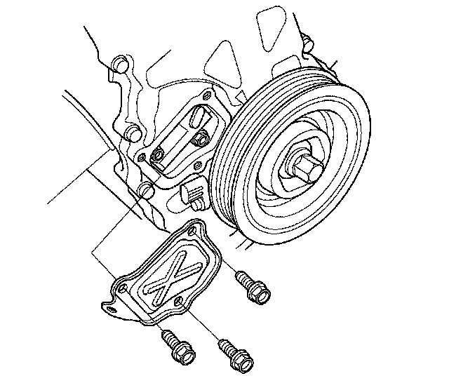
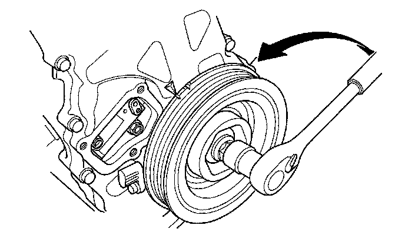
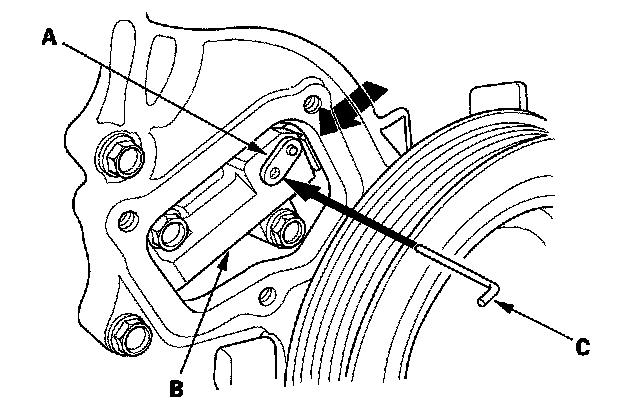
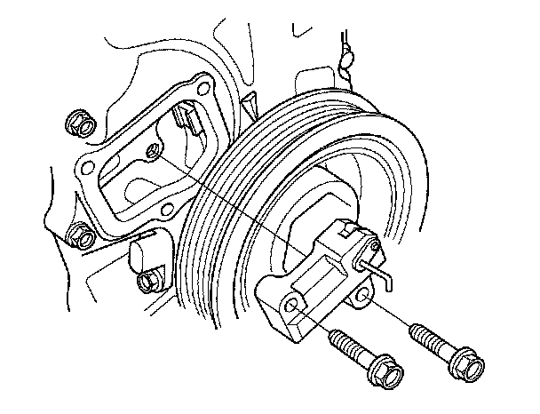
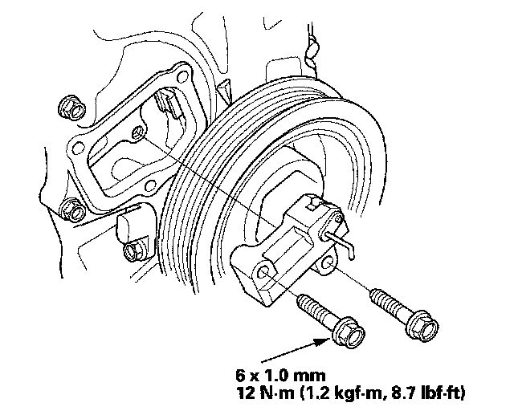
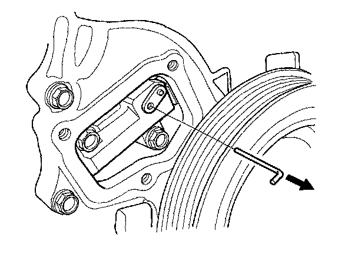
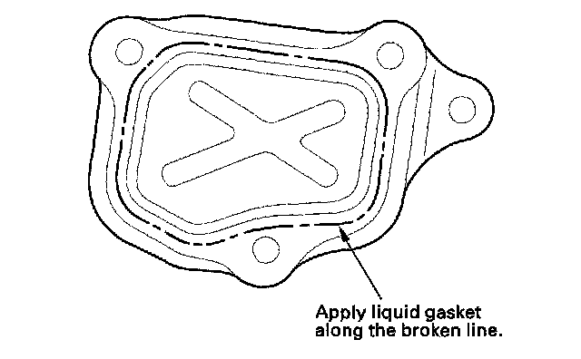
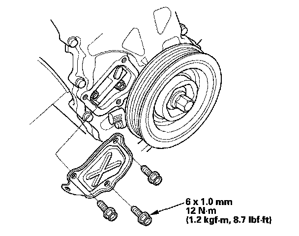

Timing Chain Tensioner: Service and Repair
Auto-tensioner Removal and InstallationRemoval
1. Remove the chain case cover.

2. Turn the crankshaft counterclockwise to compress the auto-tensioner.

3. Align the holes on the lock (A) and the auto-tensioner (B), then insert a 1.2 mm (0.05 in.) diameter pin or lock pin (P/N 14511-PNA-003) (C) into the holes. Turn the crankshaft clockwise to secure the pin.

4. Remove the auto-tensioner.

Installation
1. Install the auto-tensioner.

2. Remove the pin or lock pin (P/N 14511-PNA-003) from the auto-tensioner.

3. Remove all of the old liquid gasket from the chain case cover mating surfaces, bolts, and bolt holes.
4. Clean, and dry the chain case cover mating surfaces.
5. Apply liquid gasket, P/N 08717-0004, 08718-0001, 08718-0002, 08718-0003, or 08718-0009, evenly to the chain case mating surface of the chain case cover.
NOTE: Do not install components if too much time has passed after applying the liquid gasket (for P/N 08717-0002, no more than 4 minutes, for all others, no more than 5 minutes). Instead, remove the old residue and reapply the liquid gasket.

6. Install the chain case cover.
NOTE:
^ Wait at least 30 minutes to allow liquid gasket to cure before filling the engine with oil.
^ Do not run the engine for at least 3 hours to allow liquid gasket to cure after installing the chain case cover.
